Bà Nà Hills
Địa Điểm Du Lịch Nghỉ Dưỡng
Nhắc đến miền trung là nhắc đến một vùng đất quanh năm thiên tai, hạn hán, lũ lụt kéo dài, con người nơi đây chân chất, lam lũ, lương thiện. Bên cạnh đó miền trung còn được biết đến là một nơi với nhiều danh lam thắng cảnh nổi tiếng, đặc biệt trong đó phải kể đến thành phố Đà Nẵng với biết bao thiên nhiên tươi đẹp, nơi khơi nguồn sáng tác của biết bao thi ca, họa sĩ. Đà Nẵng – thành phố du lịch với vô số các điểm đến hấp dẫn nhưng vẫn không thể nào vượt qua cái tên Bà Nà Hills. Nơi đây được ví von như chốn “tiên cảnh” hay “Châu Âu thu nhỏ” với cảnh quan tuyệt đẹp, những công trình kiến trúc đẹp ma mị và cả những trò chơi giải trí cực kỳ hấp dẫn. Tất cả đã biến nó trở thành một trong những điểm du lịch bậc nhất Việt Nam mà ai cũng cũng ghé thăm. Mặc dù nổi tiếng là vậy nhưng có mấy ai hiểu hết về nơi này.
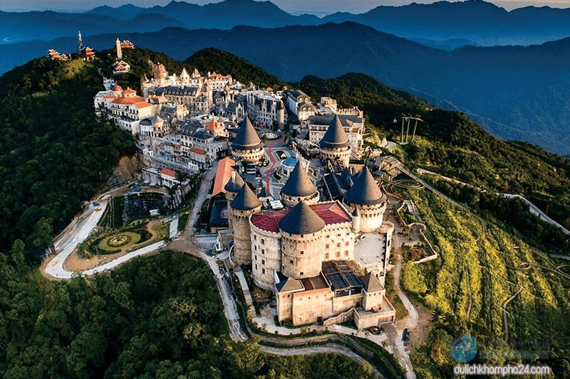Bà Nà hay còn gọi là Núi Chúa nằm trong địa phận huyện Hòa Vang về hướng Tây cách thành phố Đà Nẵng 15km theo đường chim bay. Núi có độ cao cách mặt nước biển 1482m, do đó mà thời tiết khí hậu nơi đây quanh năm mát mẻ, dịu nhẹ, nhiệt độ cũng phù hợp chỉ dao động từ 17 đến 20 độ C. Mỗi khi nói đến khu du lich nghỉ dưỡng thì Bà Nà thuộc trong số những nơi được đánh giá tiêu biểu và được ví như là “hòn ngọc khí hậu” với sự trong xanh, hiền hòa, thiên nhiên tươi đẹp.
Ngay từ những ngày đầu đi vào hoạt động, đến nay sức hút của Bà Nà Hiils vẫn chưa hề thay đổi. Được biết đến là điểm du lịch với nhiều địa điểm đẹp, nhiều trải nghiệm độc đáo, Bà Nà trở Thành nơi lui tới của nhiều du khách Việt Nam cũng như nước ngoài. Mỗi năm, nơi đây đón hàng triệu lượt khách. Do thường xuyên được đầu tư mạnh về du lịch nên trong mùa cao điểm luôn trong tình trạng “cháy vé”.
Mỗi lần giới thiệu về Bà Nà Hills Đà Nẵng không ít người muốn biết về nguồn gốc của cái tên ngày. Thực ra vẫn chưa có ý kiến chung nào cho tên gọi này. Có người giải thích rằng ban đầu núi có tên là Banane do một người Pháp đặt vì thấy rằng đây là vùng trồng rất nhiều cây chuối đặc biệt, sau đó lâu dần theo thời gian vì tên khó phát âm nên người dân gọi thành Bà Nà. Đa phần mọi người chỉ biết Bà Nà thuộc quyền quản lý của tập đoàn Sun Group nhưng lại chưa biết về lịch sự hình thành, phát triển của nơi này vì đâu mà có.
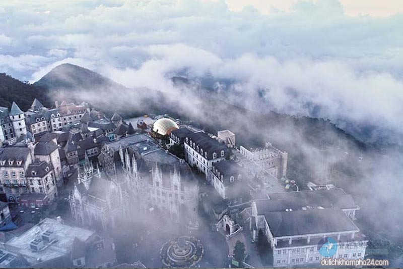Bà Nà được khám phá vào năm 1901 bởi đại úy Debay. Lúc bấy giờ toàn quyền Đông Dương Pháp muốn tìm một chỗ để nghỉ mát sau này. Đến tháng 4/1901, đại úy Debay phát hiện Bà Nà có địa hình tương đối bằng bằng, yên tĩnh, khí hậu mát mẻ lại không quá xa đất liền. Tháng 11/1911 toàn quyền Đông Dương ra nghị quyết để Bà Nà trở thành khu bảo tồn lâm nghiệp. Và sau chiến tranh thế giới thứ nhất, người Pháo chính thức xây dựng thành khu nghỉ mát. Người đầu tiên thiết kế nhà nghỉ trên núi là luật sư Beisson. Kể từ năm 1928, con đường lên núi hoàn thiện cũng là lúc lượng khách tới Bà Nà ngày một nhiều hơn, trong đó chủ yếu là quan chức Việt và người Pháp. Trở thành khu du lịch nghỉ dưỡng nổi tiếng khắp Đông Dương. Chiến tranh xảy ra, gây nên sự tàn phá cho khu du lịch Bà Nà, dần dần bị lãng quên bởi chiến tích của chiến tranh. Do đó không chỉ là một danh lam thắng cảnh nổi tiếng của Đà Nẵng mà đây còn là nơi đánh dấu mốc chiều dày lịch sử lâu đời, tinh thần bất khuất, kiên cường của người dân Đà Nẵng chống trả quân xâm lược.
Năm 1997, sau thời gian giải phóng dài thành phố Đà Nẵng đầu tư trở lại, biến Bà Nà thành khu sinh thái quy mô lớn. Năm 2000 Bà Nà lấy lại vị thế với danh nghĩa là khu du lịch nổi tiếng miền Trung nhưng vẫn chưa thực sự thu hút nhiều khách do sự quản lý thiếu chuyên nghiệp và đầu tư sai cách. Năm 2007 khu du lịch được giao cho tập đoàn Sun Group quản lý. Cũng từ đó diện mạo Bà Nà Hills bắt đầu “thay da đổi thịt”. Hiện tại khu du lịch Bà Nà Hills không chỉ được biết đến là điểm tham quan mà là cả một hệ thống du lịch, nghỉ dưỡng quy mô lớn. Bao gồm hệ thống nhà hàng, khách sạn nghỉ dưỡng, khu vui chơi giải trí với nhiều công trình hiện đại và độc đáo như: tuyến cáp treo dài nhất thế giới, Bảo tàng tượng sáp đầu tiên tại Việt Nam, công trình máng trượt Bà Nà,… Tất cả có tổng kinh phí đầu tư tới 300 triệu USD, một con số không hề nhỏ. Hơn nữa, điểm đến này còn thường xuyên tu sửa, bổ sung thêm nhiều hạng mục hấp dẫn.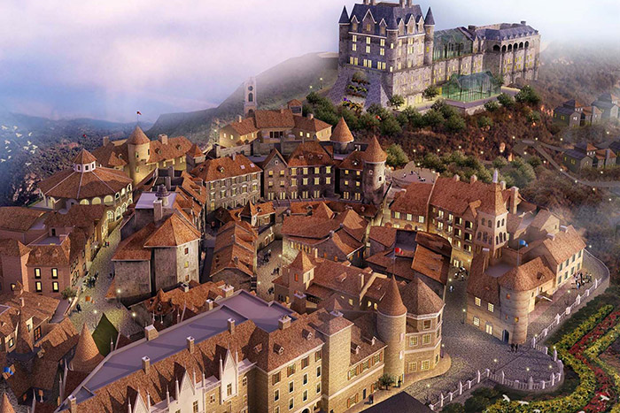
Giới thiệu về Bản đồ các khu vực của Bà Nà Hills
Khu vực chân núi Bà Nà
Rời Ga Morin, du khách men theo con đường bộ sẽ lên được đỉnh Bà Nà Hills – khu vực tâm linh gồm nhiều công trình uy nghiêm, thanh tĩnh. Nằm ở vị trí cao nhất là dền Lĩnh Chúa Linh Từ và đền thờ Bà Chúa Thượng Ngàn – vị thần bảo vệ, che chở cho ngọn núi này. Bên cạnh đó, du khách còn có thể tham quan thêm các địa điểm khác như Vũ Trụ Quán, Tháo Chuông và rất nhiều nơi thú vị khác.
Sau khoảng 40 phút di chuyển từ thành phố đến chân núi, bạn có thể chọn nghỉ ngơi và mua sắm tị khu ẩm thực. Sau đó mua vé tại quầy bán vé và lên đường tham quan Suối Mơ – ngọn thác hùng vĩ, cũng là một trong những địa điểm hấp dẫn nhất ở đây. Bạn cũng sẽ được tận hưởng bầu không khí trong lành, hòa mình vào thiên nhiên, nghe tiếng chim hót, suối chảy. Khu này có hai tuyến cáp treo: một dẫn lên khu ga Bà Nà ngay lưng chừng núi, một dẫn thẳng lên ga Morin. Tùy thuộc vào bạn để chọn tuyến cáp treo phù hợp.
Khu vực ga Bà Nà Hills
Đây là khu vực thứ 2 mà bạn sẽ chạm chân đến. Tại khu vực Ga Bà Nà Hills bạn sẽ có dịp tham quan rất nhiều địa điểm. Đầu tiên là Chùa Linh Ứng – một trong ba ngôi “Linh Ứng Tự” nổi tiếng của thành phố. Sau đó là vườn Tịnh Tâm, một công trình thơ mộng nằm hòa mình giữ thiên nhiên. Cũng cạnh đó, du khách được chiêm ngưỡng Phật Thích Ca Mâu Ni, bức tượng Phật lớn nhất Đông Nam Á cao 33 m, rộng 14 m. Khu vực Ga Bà Nà còn có sân tennic, nhà hàng cà phê Doumer, hầm rượu Debay nằm sâu trong lòng đất, được người Pháp xây dựng vào năm 1923. Tại đây lưu trữ nhiều loại rượu vang nổi tiếng mà bạn sẽ có dịp nếm thử.

Khu vực Ga Morin
Từ Ga Bà Nà bạn đi cáp treo hoặc có thể đi bộ để đến với khu vực Ga Morin. Đây được xem là khu vực trung tâm, hấp dẫn du khách nhất. Nơi này tích hợp đầy đủ các dịch vụ giải trí, ăn uống và nghỉ dưỡng.
Một địa điểm chắc chắn không thể bỏ qua ngay khi xuống cáp đó chính là vườn hoa Le Jardin D’Amour với hàng trăm loài hoa rực rỡ khác nhau trên thế giới. Tiếp đó là Làng Pháp cổ kính với những công trình kiến trúc ấn tượng. Ngoài ra ở khu Ga Morin, du khách sẽ được thỏa thích giải trí với hàng trăm trò chơi từ cảm giác nhẹ đến mạnh tại công viên Fantasy Park – khu vui chơi trong nhà lớn nhất Việt Nam.
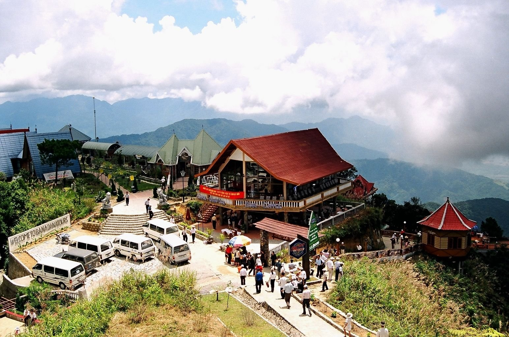Giới thiệu kiểu thời tiết, khí hậu Bà Nà Hills có gì đặc biệt?
Nằm ở độ cao gần 1.487 m so với mực nước biển, trên đỉnh núi Chúa – ngọn núi cao nhất của dãy Trường Sơn nên tuy thuộc Đà Nẵng nhưng khí hậu Bà Nà lại hoàn toàn khác biệt.
Mang kiểu khí hậu ôn đới, quanh năm mát mẻ. Nhiệt độ trung bình năm dao động từ 17 – 20 độ C, lúc cao nhất từ 25 – 30 độ C, thấp nhất khoảng 0 – 2 độ C, thấp hơn Đà Nẵng khoảng 7 – 8 độ C.
Khí hậu chia làm 2 mùa: mưa – khô rõ rệt.
+ Mùa khô kéo dài từ tháng 3 đến tháng 9 dương lịch. Lúc này khí hậu Bà Nà như rất chiều lòng người khi trời luôn nắng ráo, mát mẻ, dễ chịu.
Cảnh vật xanh tươi, đẹp đẽ và có một sức hút kỳ diệu.
+ Mùa mưa từ tháng 10 đến tháng 2 năm sau. Bà Nà bước vào những tháng này mưa nhiều, sương mù dày và lạnh (một phần do nằm trên cao, một phần vì độ ẩm cao).
Mặc dù vậy, nó vẫn rất hấp dẫn theo một nét đẹp rất riêng.
Ngoài ra, với độ cao lý tưởng nên độ ẩm ở trên này cũng rất cao, lên đến 90%. Đó là lý do mà Bà Nà thường xuyên xuất hiện nhiều mây và sương mù. Đây có lẽ cũng chính là một trong những yếu tố làm nên nét đẹp đặc trưng, cuốn hút cho khu du lịch này.
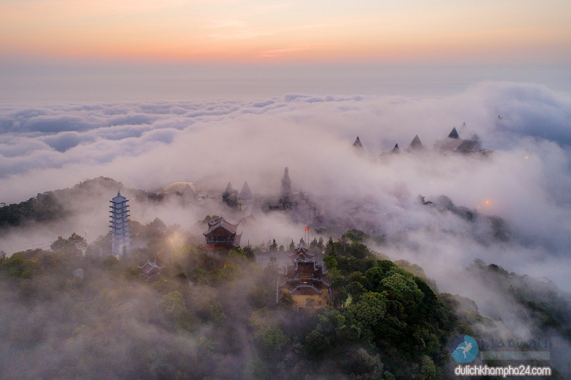Bà Nà – Núi Chúa ngoài cái tên là “đường lên tiên cảnh” hay “thiên đường nơi hạ giới” thì còn được mệnh danh là “Sapa thứ 2 của Việt Nam”, “Đà Lạt của miền Trung” nhờ có kiểu khí hậu chuyển hóa đặc biệt giữa 4 mùa trong 1 ngày. Dường như, trong 24 giờ không gian được chia thành những ô khí hậu rành mạch.
Khí hậu buổi sáng Bà Nà Hills tựa mùa xuân
Buổi sáng trên Bà Nà khá trong lành và yên bình. Nhiệt độ vào sáng sớm dao động trong khoảng 14 – 16 độ, se se lạnh, sương mù vây kính xen lẫn ánh nắng bình minh nhẹ dịu rọi chiếu qua những tán cây, kẽ lá, phảng phất màu xanh lá non thuần khiết hệt như mùa xuân về. Chắc chắn nếu có dịp đến đây vào sáng sớm bạn sẽ yêu luôn kiểu thời tiết và cảnh vật thời khắc này.
Khí hậu buổi trưa Bà Nà nắng nóng của mùa hạ
Bắt đầu qua 9h sáng, khi mặt trời dần lên cao và những tia nắng đủ để làm tan những giọt sương trên lá và đám sương mù, mang lại sự ấm áp, chan hòa. Nhiệt độ Bà Nà thời điểm này khiến người ta có cảm giác được như mùa hạ vừa ghé ngang qua. Buổi trưa trên đây nóng hơn sáng nhưng nhờ vị trí lý tưởng nên không hề gay gắt mà chỉ nằm trong khoảng 19 – 24 độ C. Cảnh vật rực rỡ, tươi mới, rất thích hợp để vui chơi, khám phá và check-in.
Chiều Bà Nà Hills mát mẻ tựa thu sang
Vào 15h chiều, nhiệt độ Bà Nà Hills giảm dần xuống mức 15 – 17 độ C, sương mù xuất hiện và những luồng gió nhẹ, ánh nắng mặt trời chuyển sang nâu, hoàng hôn chậm rãi xuống núi. Bạn sẽ cảm nhận rõ rệt làn gió heo mây đặc trưng của mùa thu về. Cảnh sắc về chiều trầm lắng hơn, thích hợp để đi bộ ngắm hoàng hôn.
Buổi tối Bà Nà Hills như đông tới
Sau 19h, khi mặt trời tắt hẳn cũng là lúc Núi Chúa đón cái rét của mùa đông. Nhiệt độ thời điểm này chỉ còn khoảng 13 – 14 độ C. Cái lạnh dần dần thấm vào da thịt hòa cùng không gian yên tỉnh và cảnh vật lung linh về đêm. Các bạn sẽ tận hưởng được sự lãng mạn, rất lý tưởng nếu bạn muốn có một buổi tối ngọt ngào bên người thân yêu.

Nên du lịch Bà Nà Hills thời điểm nào lý tưởng?
Với cảnh sắc thiên nhiên tươi đẹp và kiểu khí hậu mát mẻ, dễ chịu. Bà Nà trở thành một trong những điểm đến mà bạn có thể đi vào bất cứ thời gian nào trong năm, bởi mỗi mùa nơi đây đều mang một nét đẹp riêng. Tuy nhiên, vẫn có những thời điểm đẹp nhất mà bạn có thể thích đó là:
Du lịch Bà Nà Hills từ tháng 4 đến tháng 10
Từ tháng 4 – tháng 10 là mùa hè, thời gian này tiết trời khô ráo, không quá nắng gắt, thiên nhiên trong lành, nắng vàng, rất thích hợp cho việc di chuyển, tham quan, khám phá. Đến Bà Nà Hills vào thời gian này bạn sẽ cảm nhận rõ rệt kiểu khí hậu 4 mùa trong 1 ngày độc đáo, được ngắm nhìn trọn vẹn chốn tiên cảnh mà không bị sương mù và mây che khuất tầm mắt.
Xong, bởi vì quá thuận tiện nên hầu như du khách nào cũng chọn đi vào thời điểm nào. Bà Nà trở nên đông nghẹt khách, nếu đi tự túc bạn phải xếp hàng chờ mua vé cáp treo khá lâu còn nếu đi theo tour thì không lo vấn đề này vì đã có công ty du lịch lo hết.Du lịch Bà Nà Hills mùa lễ hội
Được mệnh danh là “điểm đến của sự kiện và lễ hội hàng đầu khu vực”. Cứ đến hẹn là trên đỉnh Núi Chúa lại sôi động, nhộn nhịp với hàng loạt sự kiện lớn, thu hút đông đảo khách du lịch. Các lễ hội thường diễn ra vào các tháng cuối năm và dịp lễ, Tết như: tháng 10, tháng 12, tháng 1, tháng 2. Tiêu biểu có lễ hội Haloween, lễ hội mùa đông, Carnival, lễ hội hoa, rượu vang, Noel,…. với vô vàn trải nghiệm mới lạ, độc đáo. Bà Nà cũng được trang hoàng lộng lẫy, đã đẹp nay còn đẹp hơn.
Nếu muốn được một lần trải nghiệm không khí ấy, trong một không gian hoàn toàn khác biệt, hãy sắp xếp thời gian đến với Bà Nà vào dịp cuối hoặc đầu năm nhé! Đây cũng là thời điểm rất đông khách du khách tham dự đấy.
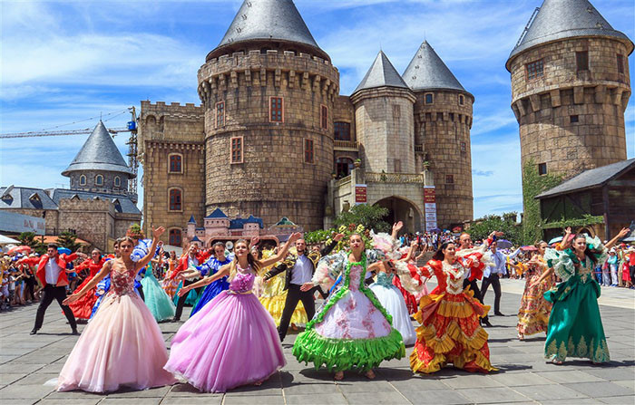
Giới thiệu về Bà Nà Hills có những điều gì đặc biệt?
Không phải ngẫu nhiên mà Bà Nà Hills lại trở nên nổi tiếng và được yêu thích đến vậy. Nơi đây có kiểu khí hậu rất đặc biệt, có cảnh quan đặc biệt và cả hệ thống cáp treo đặc biệt,… mà chắc chắn chỉ tới đây bạn mới có thể cảm nhận hết.
Hệ thống cáp treo Bà Nà Hills giữ nhiều kỷ lục thế giới
Để đáp ứng nhu cầu của hàng triệu du khách đến Bà Nà, Sun World Ba Na Hills đầu tư tới 5 tuyến cáp treo, gồm: cáp treo Bà Nà – Suối Mơ. Debat – Morin, Thác Tóc Tiên – L’Indochine, Hội An – Marseille và Bordeaux – Louvre.
Trong đó có nhiều tuyến có nhiều tuyến đạt nhiều kỷ lục thế giới và giải thưởng quốc tế đó là:
+ Tuyến cáp một dây dài nhất thế giới với tổng chiều dài hơn 5,771 km.
+ Độ chênh giữa ga đi và ga đến cao nhất thế giới với độ chênh lệch hơn 1,368 km.
+ Chiều dài một sợi cáp không nối dài nhất thế giới với 11,587 m.
+ Độ nặng cuộn cáp nặng nhất thế giới với 141,24 tấn.
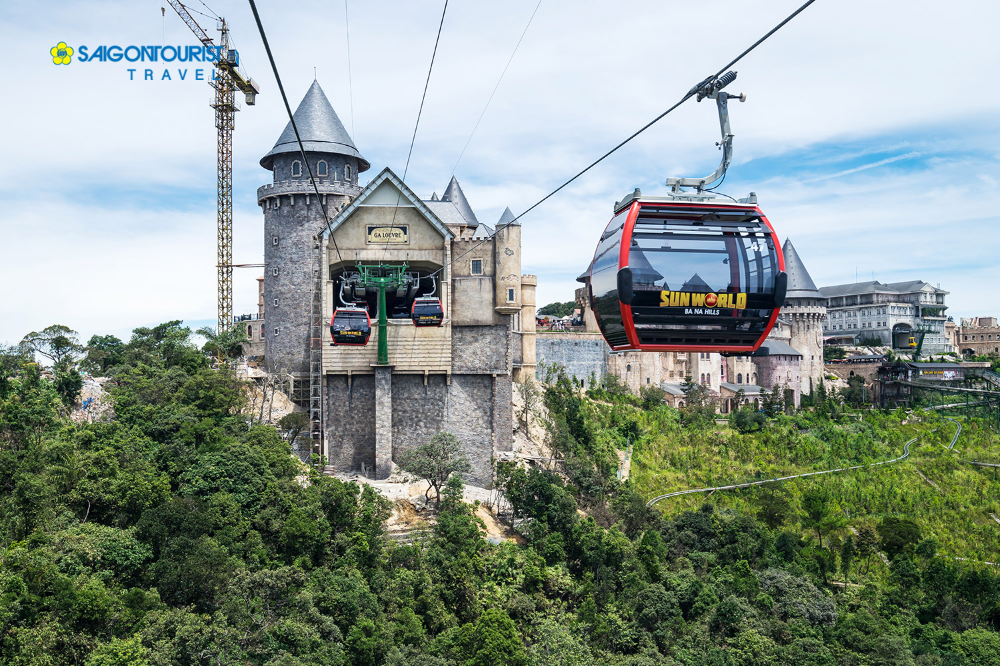
Giới thiệu về Bà Nà Hills có gì đẹp? Các điểm tham quan nổi bật
Như đã giới thiệu về Bà Nà Hills ở trên đã đề cập, ở đây có rất nhiều điểm du lịch đẹp và độc, có thể kể đến một số cái tên tiêu biểu dưới đây mà chắc chắn bạn sẽ rất trầm trồ về nó.
Hầm rượu Debay gần 100 năm tuổi
Theo dòng lịch sử Bà Nà Hills, hầm rượu Debay được biết đến là công trình rất đặc biệt cho người Pháp xây dựng. Hầm rượu có tuổi đời gần 100 năm với chiều dài 100 m và chiều rộng 2 m. Tại đây lưu giữ, bảo quản nhiều loại rượu vang cổ thời Pháp xưa. Bên trong hầm rượu còn có lò sưởi, quầy bar phục du du khách đến thưởng rượu.
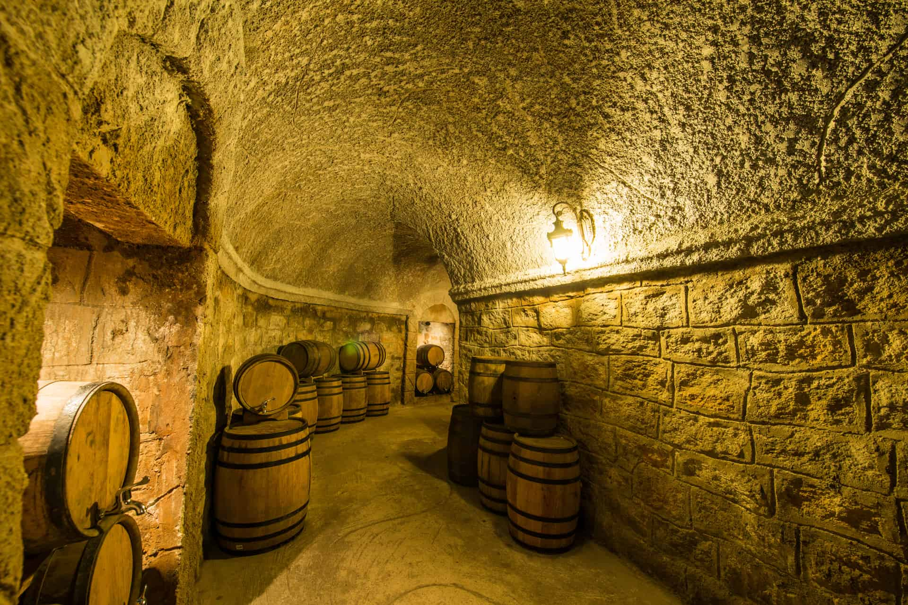Chùa Linh Ứng Bà Nà linh thiêng
Chắc bạn cũng nghe qua cái tên chùa Linh Ứng nhưng Đà Nẵng có tới 3 ngôi chùa cùng tên và chùa Linh Ứng trên đỉnh Bà Nà là ngôi chùa thứ hai. Được xây dựng vào ngày 5/3/2004, ở độ cao 1.400 m. Ngồi chùa có bức tượng Phật Thích Ca Mâu Ni cao 27 m ngồi trên đài hoa sen và 8 bức phù điêu được chạm khắc tinh xảo, tái hiện những giai đoạn cuộc đời đức Phật Thích ca.
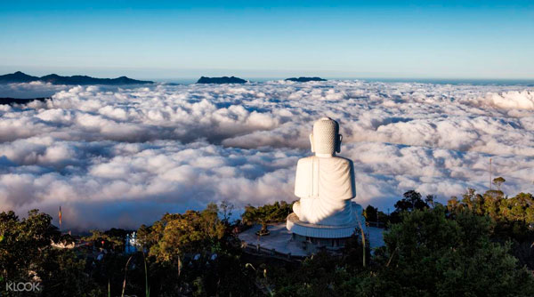Bảo tàng Tượng Sáp
Khu bảo tàng tượng sáp cũng là một địa điểm tham quan thú vị ở Bà Nà Hills mà hầu như du khách nào đều không nỡ bỏ qua. Đây là nơi trưng bày tượng sáp duy nhất của Việt Nam với gần 50 bức tượng mô phỏng các nhân vật nổi tiếng trên thế giới. Đó chính là bản sao của các chính trị gia, diễn viên điện ảnh và người mẫu, vận động viên nổi tiếng…. Dưới ban tay tinh xảo, khéo léo những người nghệ nhân Ý cho du khách cảm giác giống như người thật mà bạn sẽ được tận mắt nhìn thấy. Đừng quên tạo một vài dáng chụp hình với các nhân vật này nhaa.
Miếu Bà tâm linh trên đỉnh Bà Nà
Miếu Bà được người Pháp xây dựng từ năm 1931. Thời mà Bà Nà – Núi Chúa còn hoang sơ, âm u. Tương truyền trong dân gian, người dân lập Miếu Bà để thờ các “Bà” cầu cho cuộc sống bình an, yên ổn. Các quan cai trị người Pháp cũng tỏ ra kính cẩn Bà nên đồng ý cho lập miếu. Mặc dù chiến tranh tàn phá nhiều lần nhưng nó vẫn còn khá nguyên vẹn. Sau khi nâng cấp và trùng tu, đây trở thành một trong những điểm dừng chân của du khách đến vãn hương, cầu may mắn hay đơn giãn là để tĩnh tâm, hít hà bầu không khí trong lành.
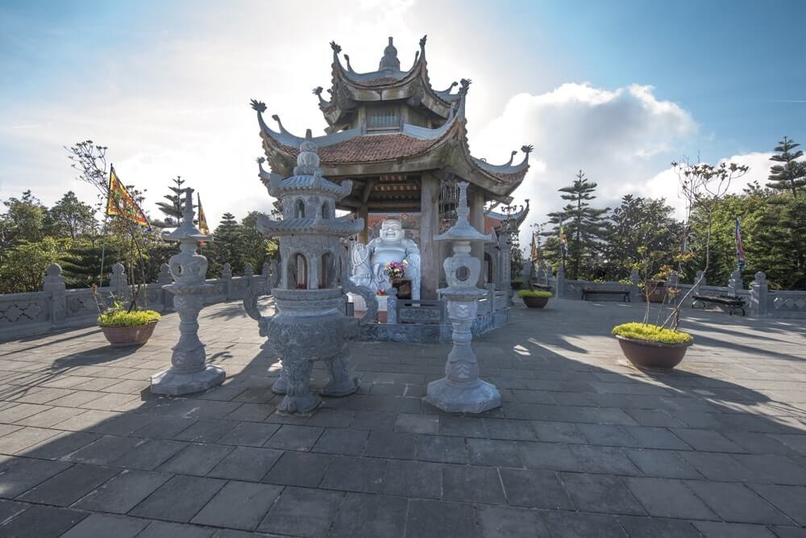Nhà Bia và Linh Phong Bảo Tháp
Đây đều là những “tọa độ” được du khách khá yêu thích, nhất là đối với người thiên về tâm linh và cần tìm không gian yên bình, thanh tịnh. Nhà bia với tấm bia cao 1,8 m, xung qunh là những bức tượng trắng uy nghi giữa cảnh sắc thiên nhiên. Còn Linh Phong Bảo Tháp là một công trình gồm có 9 tầng, mỗi tầng có tường có 4 mặt và cả 4 mặt này đều gắn tượng Phật Thích Ca Mâu Ni bằng đá trắng. Mỗi góc tầng treo một chiếc chuông đồng biểu tượng của tháp.
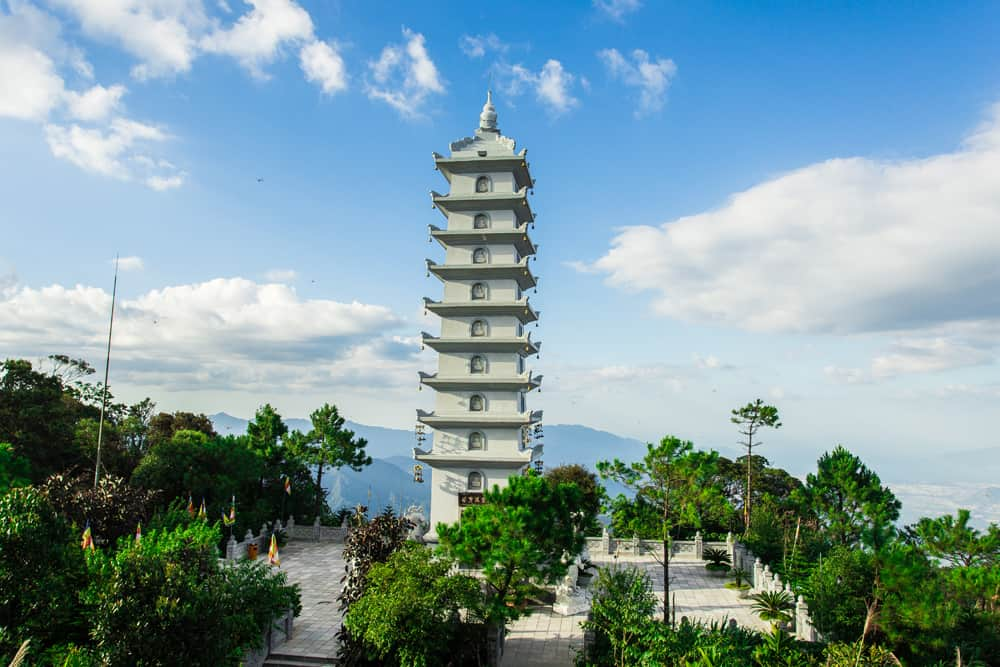Vườn Giác Quan và Vườn Suy Tưởng
Vườn Giác Quan và Vườn Suy Tưởng là cái tên nằm trong 9 khu vườn độc đáo của Bà Nà mà không phải du khách nào cũng biết. Chẳng phải là một địa điểm quá nổi bật cũng không quá cầu kỳ nhưng nhiều người đã tỏ vẻ thích thú khi ghé thăm. Một bức tượng ngộ nghĩnh với 2 tai, 1 chiếc mũi nhô lên từ mặt đất và một cái đầu với những nét mặt hiện ra,… nhìn rất đáng yêu, cho bạn cảm giác như đang lạc vào xứ sở diệu kỳ, không có thật.
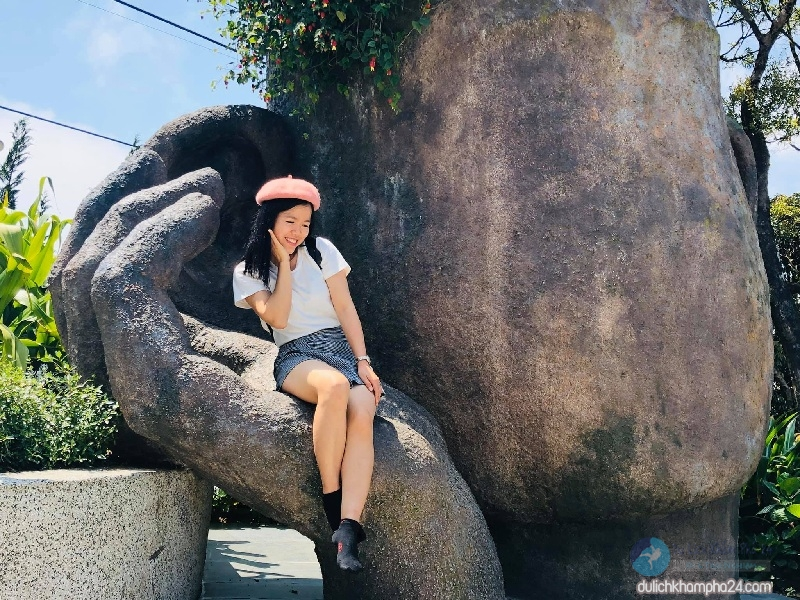Khu vui chơi trong nhà lớn nhất Việt Nam
Bà Nà Hills có khu vui chơi giải trí trong nhà lớn nhất Việt Nam, rộng tới 21.000 m2 là Fantassy Park. Đây là tổ hợp vui chơi vô cùng sôi động và hấp dẫn dành cho cả gia đình, từ các trò cảm giác nhẹ cho đến cảm giác mạnh, trò chơi kỹ năng, gắp thú nhồi bông… Ngoài ra tổ hợp cũng sở hữu khu trưng bày tượng sáp đầu tiên tại Việt Nam với những bức tượng làm bằng sáp, mô phỏng những nhân vật nổi tiếng trên thế giới.
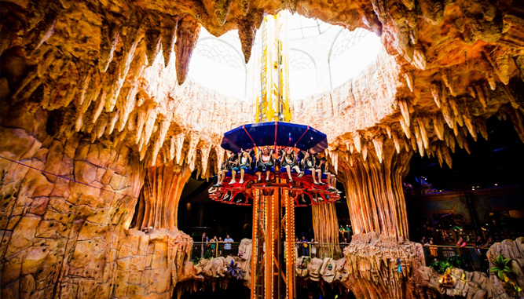Các điểm check in, chụp hình đẹp trên khu du lịch Bà Nà Hills
Cây Cầu Vàng Bà Nà nổi tiếng thế giới
Được khánh thành và đưa vào giới thiệu vào tháng 6/2018, Cầu Vàng Bà Nà Hills nhanh chóng trở thành tâm điểm của sự chú ý. Công trình như một hiện tượng lạ thu hít nhiều tín đồ đam mê du lịch trong nước lẫn ngoài nước. Cây cầu với hình ảnh bàn tay người khổng lồ vươn ra giữa núi rừng đón ánh nắng vàng, nhìn như dãy lụa vắt ngang qua núi tuyệt đẹp. Cũng trong năm 2018 cây cầu được tờ tạp chí danh giá Times bình chọn là một trong những điểm đến hấp dẫn nhất hành tinh. Bật mí, nếu bạn muốn có những shoot hình đẹp và độc đáo với cây Cầu Vàng, bạn hãy tranh thủ đi tuyến cáp treo sớm nhất. Hoặc có điều kiện thì ở lại trên khu du lịch một đêm, để có cơ hội check-in thả ga mà không sợ ai lấn chiếm.

Làng Pháp cổ kính trên đỉnh Bà Nà Hills
Công trình này được xây dựng vào năm 2011, đây là không gian thể hiện rõ nhất nét cổ kính của Pháp ở thể kỷ 20. Với kiểu kiến trúc được thiết kế dựa trên quyển phác thảo của nhà truyền giáo người Pháp gồm Thành đường, quảng trường, ngôi làng nhỏ nhắn Apremont sur Allier, làng mạc, thị trấn, khách sạn… Bước vào đây bạn sẽ cảm nhận được sự lãng mạn và dễ dàng cho ra đời những bức hình cực chất.
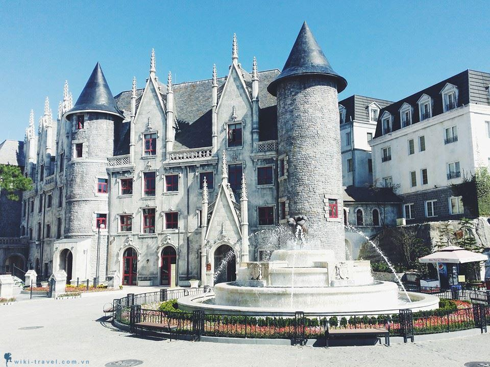Vườn Hoa Tình Yêu(Le Jardin D’Amour)
Nằm ở phía Đông núi Bà Nà là vườn hoa khổng lồ có diện tích tận 8.206 m2 – vườn hoa Le Jardin d’Amour hay còn gọi là vườn hoa tình yêu. Khai trương từ tháng 4 năm 2014 với 9 khu vườn nhỏ mang 9 chủ đề khác nhau. Hàng trăm loại hoa: cẩm tú cầu, cúc bách Nhật, lavender, hồng châu Âu,… đua nở như tô điểm cho không gian tuyệt vời của Bà Nà, tạo những khoảnh khắc yên bình và lãng mạn
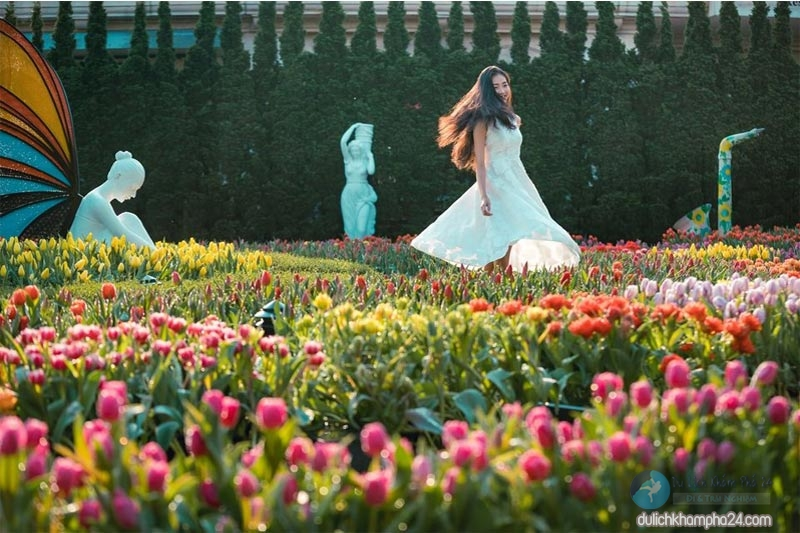Cầu Tình Yêu
Ngay trên đường dẫn lối đến vườn hoa Le Jardin D’amour, các bạn sẽ đi ngang qua khu vực cầu Tình Yêu. Cây cầu này không quá rộng cũng không quá dài nhưng lại là điểm check-in mà rất nhiều bạn trẻ yêu thích nhờ trang trí đèn và hoa rất lãng mạn, hấp dẫn. Vì thế, đừng quên ghé vào đây, tìm một vài gốc để “ring” ngày vào bức hình và lưu lại những kỷ niệm ngọt ngào sau chuyến đi nha
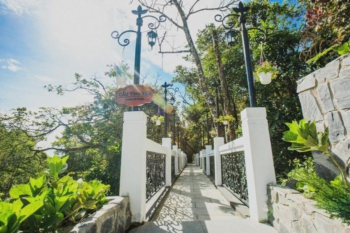Nhà thờ St.Denis nét đẹp cổ kính
Thực chất Nhà thờ St. Denis nằm trước khu Làng Pháp và cũng là điểm đến khá quen thuộc đối với tất cả mọi người. Công trình kiến trúc này cực kỳ đặc sắc và ấn tượng với mái vòm cung và những bức tường đá, phía mặt tiền có cấu trúc thăng bằng. Tất cả được tái hiện một cách sống động và uy nghi. Đặc biệt, bên trong thánh đường còn lộng lẫy hơn rất nhiều. Đây cũng là nơi được các cặp đôi chụp hình cưới hay các bạn trẻ lưu lại những bức hình đẹp.
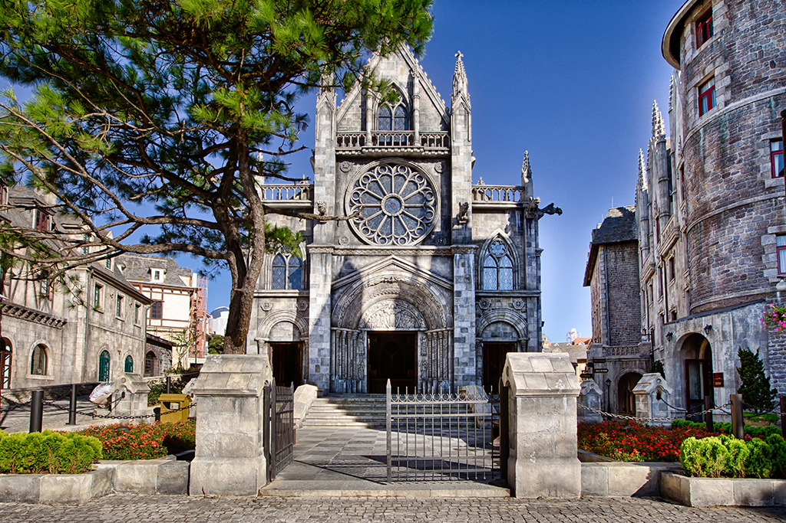Ngôi nhà cổ bỏ hoang trên Bà Nà Hills
Có lẽ khi giới thiệu về Bà Nà Hills mọi người thường bỏ qua địa điểm này. Cũng rất dễ hiểu, vì nó nằm khá khuất trong rừng. Bạn nào muốn khám phá sự hoang dã, bí ẩn và sở hữu những bức hình độc lạ thì hãy tìm đến đây. Từ cuối cây Cầu Vàng, bạn đi theo hướng dẫn đến vườn hoa, đi qua vườn Tượng khoảng 100 m, nhìn bên phải sẽ thấy ngôi nhà cổ bỏ hoang. Lối dẫn vào nhà cũng lãng mạn không kém, hoa nở khoe sắc. Đây là một công trình kiến trúc thời xưa, sau thời gian dài không hoạt động mới trở nên hoang vắng.
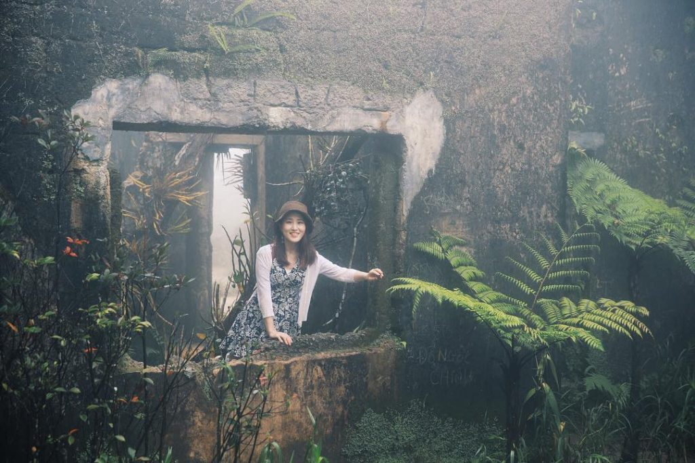Giới thiệu về những hoạt động giải trí của Bà Nà Hills
Công viên Fantasy Park với hàng trăm trò chơi hấp dẫn
Fantasy Park là khu vui chơi trong nhà duy nhất tọa lạc trên đỉnh núi ở nước ta và trên thế giới. Công viên được thiết kế và xây dựng dựa trên cảm hứng từ hai cuốn tiểu thuyết nổi tiếng của nhà văn Pháp Jules Verne đó là: Hành trình vào trung tâm trái đất và Hai vạn dặm dưới đáy biển. Với tổng diện tích là 21.000 m2, chia làm 3 tầng quy mô, hứa hẹn sẽ là điểm đến lý tưởng, mang lại cho bạn và gia đình những trải nghiệm thật sảng khoái và đáng nhớ.
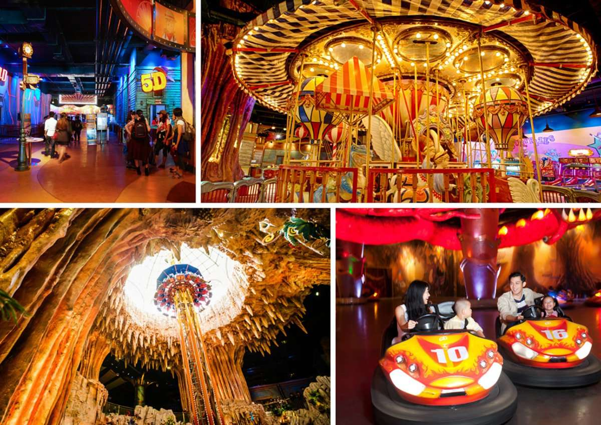Khu vui chơi là nơi hội tụ hơn 100 trò chơi mạo hiểm, cảm giác mạnh và nhiều loại trò chơi khác nhau, phù hợp với mọi lứa tuổi. Có thể điểm qua những hoạt động hấp dẫn như :
+ Phi công Skiver: Tham gia trò này, bạn sẽ được tự do điều khiển thuyền bay theo ý mình và trải nghiệm cảm giác phiêu lưu khi tung bay trên bầu trời hệt như một phi công.
+ Tháp rơi tự do: Bạn là người mê khám phá, thích mạo hiểm chắc chắn không thể bỏ qua trò chơi này. Người chơi được ngồi ở một vị trí cao nhất (29 m) và từ từ tuột xuống dưới hang động – một cảm giác thốt tim đến nghẹt thở.
+ Leo núi nhân tạo: Bạn sẽ được trang bị dây bảo hộ và bám vào những miếng đỡ trên bức tường leo núi nhân tạo cao 21 m để lên được đỉnh núi. Nếu không quen cũng đừng lo vì sẽ có người hướng dẫn tận tình.
+ Ngôi nhà kinh dị: Cảm giác lạc vào ngôi nhà hoang và khám phá những điều rùng rợn, trong đó có có tiếng hú động vật, tiếng khóc và cả tiếng dọa ma,… bạn có dám. Nếu không phải là người yếu tim thì đây là một trải nghiệm khá thú vị đó.
+ Công viên kỷ Jura: Khu vực này phù hợp cho mọi thành viên, công viên kỷ Jura đưa bạn lạc vào khung cảnh thời cổ cách đây hơn 150 triệu năm và tận mắt chứng kiến những chú khủng long khổng lồ.
Với các bạn nhỏ có thể thỏa thích với trò chơi gắp quà, đu quay dưới đại dương, anh hùng cứu hỏa… Ngoài ra, trong khu vui chơi Fantasy Park còn có cả rạp chiếu phim 4D hiện đại. Tại đây bạn sẽ có những tiếng cười giòn tan, xua tan sự mệt mỏi hàng ngày.
Đường xe trượt ống tốc độ 3 vòng xoáy
Một trong những trò chơi cảm giác mạnh được hầu hết du khách, đặc biệt là các bạn trẻ đều yêu thích khi đến Bà Nà – đường trượt ống tốc độ. Trước đây, đường trượt này có 2 vòng xoắn kép thì gần đây nhất khu du lịch này đã nâng cấp thành đường xe trượt 3 ống vòng xoáy đầu tiên tại Việt Nam. Ngay từ những ngày đầu ra mắt, rất nhiều tín đồ đam mê với loại hình này đều tìm đến để tận hưởng cuộc phiêu lưu phấn khích trên không này.
Không chỉ duy nhất và đầu tiên tại Việt Nam mà ngay cả trên thế giới đây chính là đường trượt ống có nhiều vòng xoáy hiếm hoi. Khi tham gia, bạn sẽ được ngồi trên xe cùng với một người nữa, chốt dây an toàn và giữ cành điều chỉnh tốc độ, phanh rồi chạy trên quãng đường dài hơn 1,5 km. Hẳn sẽ có một chút hồi hộp, lo sợ khi đi theo những đường uốn lượn lên xuống bất ngờ. Nhưng bạn sẽ ngỡ ngàng khi được ngắm nhìn cảnh sắc tuyệt mỹ của núi Chúa xung quanh.
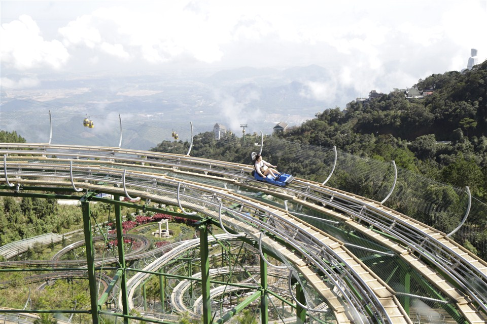Trải nghiệm chuyến tàu hỏa leo núi độc đáo
Ngoài việc trải nghiệm tuyến cáp treo mang những kỷ lục thế giới và hệ thống máng trượt, du khách nhất định phải thử tuyến tàu hoa leo núi. Đây là chuyến tàu leo núi đầu tiên tại Việt Nam được hãng Garaventa (Thụy Sĩ) cung cấp. Tàu sẽ đưa bạn đến với vườn hoa D’Amour, hầm rượu cổ Debay và chùa Linh Ưng – những điểm đến không thể bỏ lỡ trong hành trình khám phá chốn tiên cảnh. Du khách sẽ có khoảng 1 phút 30 giây chu du trên những tuyến tàu hỏa độc đáo, đi quà những triền núi, ngắm nhìn toàn cảnh rừng nguyên sinh hùng vĩ. Chắc chắn sẽ để lại trong bạn nhiều cảm xác khó tả.
Giới thiệu về Bà Nà Hills giá vé cáp treo bao nhiêu tiền?
Với một khu du lịch nổi tiếng, có nhiều cái nhất như vậy thì giá vé cáp treo là bao nhiêu tiền, liệu có đắt không? Đây cũng là điều mà du khách quan tâm khi có ý định ghé thăm nơi này. Yên tâm trong bài giới thiệu về Bà Nà Hills này, chúng tôi sẽ cung cấp thêm thông tin này để bạn tham khảo:
Giá vé cáp treo Bà Nà Hills cho du khách ngoại tỉnh
Những du khách từ các tỉnh, thành phố khác đến thường sẽ phải mua vé với mức giá cao hơn so với người có hộ khẩu thường trú tại Đà Nẵng, cụ thể giá vé được áp dụng như sau:
+ Người lớn: 750k/người Trẻ em (1 – 1,4 m): 600k/người.
+ Trẻ em dưới 1 m: Miễn phí Vé cáp treo Bà Nà hiện nay là 70k/người lớn.
Giá vé cáp treo Bà Nà Hills cho du khách Đà Nẵng
Các du khách ở Đà Nẵng nếu muốn mua vé đi chơi Bà Nà Hills giá ưu đãi nhỡ mang theo giấy chứng minh nhân dân/hộ chiếu hoặc giấy khai sinh (đối với trẻ em).
Mua được tấm vé khuyến mãi giúp bạn tiết kiệm một khoản chi phí không nhỏ cho chuyến đi.
+ Người lớn: 450k/người.
+ Trẻ em: 350k/người
Lưu ý:
+ Gié vé cáp treo chỉ có giá trị sử dụng trong thời hạn 1 ngày và không được đổi trả. Du khách cần phải cẩn thận để không mua phải vé hết hạn.
+ Trong giá vé đã bao gồm: vé vào cổng khu du lịch, cáp treo, miễn phí phần lớn các trò chơi trong công viên Fantasy Park, tham quan hầm rượu Debay, cầu Vàng, làng Phá, vườn hoa tình yêu, tàu hỏa leo núi,…
+ Giá vé không bao gồm: vé tham quan bảo tàng tượng sáp (100k/người lớn), trò chơi gắp thú nhồi bông và trò chơi kỹ năng tạ Fantasy.